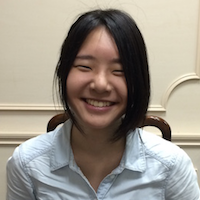
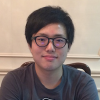

熊谷 祐
早稲田大学 教育学部社会科 14卒業
ーーー PAAK BOOTCAMPの感想をお願いします
学生だったら絶対応募したほうがいいと思います。プログラミングってどのくらい継続してやるかも大切ですが、初心者の場合は最初に一気に詰め込むことが習得の上で大切かなと。BOOTCAMPは一ヶ月集中して学習できるのでそれがよかったです。
ーーー どうして参加しようと思いましたか？
もともと自分でプログラミングを勉強していて、2回ほど挫折した経験がありました。それでもできる範囲で継続して勉強していました。ただ、このままでは中途半端で終わってしまうなと思い、1ヶ月間時間をとって応募しました。
ーーー 参加してどのようなことが身についたと思いますか？
スキル的には、HTML/CSSのコーディングや、Railsの基本的なことなどです。ただそれだけではなく、プロトタイプを作る上での仕様書の書き方、特にER図の書き方などを習ったので、エンジニアの人とロジカルに会話をすることができるようになったと思っています。データベースの設計など考えたこともなかったので、そういうものなのかと知ることができてよかったです。
ーーー 参加から2ヶ月ほど経ちましたが、その後どうですか?
Kaizen Platformというサービス上でグロースハッカーとしてWEB分析などをしているのですが、そのなかでプロトタイプを作る能力がとても役立っています。最近はデザインに落とし込む上でPhotoshopなどだけではなく、WEBのスキルも必要になりますから。今後はグロースハッカーの育成などもやっていきたいと思っています。
ーーー 次の参加者向けてメッセージをお願いします
100%参加してよかったと思えるプログラミングでした。ただ注意してほしいのは1ヶ月間しっかりコミットすることだと思います。1ヶ月間を暇にして積極的に申し込むべきだと思います。

岡庭 晴
東京大学 教養学部文科二類 在学中
ーーー PAAK BOOTCAMPの感想をお願いします
プログラミングもやればできるなと思えるようになりました。TECH LAB PAAKは集中して学習できる環境でしたし、1ヶ月間の学習プログラムは、講師も親切に見てくれましたし、技術を吸収しやすいなと思いました。とにかく、プログラミングに対する拒絶感みたいなのがなくなったのがよかったです。
ーーー どうして参加しようと思いましたか？
もともと勉強したかったというのと、自分でサイトを作れるようになりたかったので、プロダクトをリリースするというところに惹かれました。
ーーー 参加してどのようなことが身についたと思いますか？
WEBの基礎的なところがわかるようになった気がします。例えば、インターネットでサービスを出すときにドメインを取らなくちゃいけないとか、Herokuみたいなものを利用するんだとか。今までは、ただなんとなく見ていたウェブページがどんなふうにできているのかがわかるようになった気がします。HTMLがあって、CSSがあって、WEBサーバーがあって、データベースがあってみたいな感じで、切り分けて見えるようになりました。
ーーー 参加から2ヶ月ほど経ちましたが、その後どうですか?
あんまりRailsの勉強は進んでいないですね(笑)。ただ、友達とサイトを作りました。SchoolChatという、国内のインターナショナルスクールや国外の学校の口コミサイトです。友達がHTML/CSSのコーディングをしてくれたので、自分はRailsのコードを書きました。習った通りにデータベースの設計などもしました。現在はリリースして運用していこうと思っています。
ーーー 次の参加者向けてメッセージをお願いします
やるならその一ヶ月の予定を空けて集中したほうがいいと思います。あと、TECH LAB PAAKには技術書などたくさんあるので、そういったものも活用するといいと思います。

掘田 遼人
一橋大学 商学部商学科 在学中
ーーー PAAK BOOTCAMPの感想をお願いします
1ヶ月間という短い期間で濃密に学習できたのがよかったです。ぼくは結構コミットできたので、終わったときのできた感が気持ちよかったです。TECH LAB PAAKという場所があり、講師がついてくれていたので、モチベーションの維持がしやすかったです。一緒に参加していた他の大学の人と仲良くなれたのもよかったですね。
ーーー どうして参加しようと思いましたか？
僕はもともと、企画系のインターンをしたり、勉強してきました。技術的なところも、さわり程度にはやっていました。ただ、実際に自分でサービスを作るとなると、どうやっていいのか全然わからなかったので、作れるようになりたいなと思ったのが動機です。
ーーー 参加してどのようなことが身についたと思いますか？
スキルとしてはプログラミングが少しできるようになったかなと思います。ただそれもよりも、勉強の仕方がわかったというか、なにをどうやって勉強したり調べればいいのかわかるようになりました。とっかかりを自分で見つけられるようになったので、勉強しやすくなったと思っています。
ーーー 参加から2ヶ月ほど経ちましたが、その後どうですか?
最近はJavaScriptの勉強をしています。ちょうど、大学でMonacaを使ってアプリを作るという授業があり、その授業を受けながら、JavaScriptの勉強をしています。
ーーー 次の参加者向けてメッセージをお願いします
やるなら中途半端ではなく、力を入れてやるべきだと思います。そのほうが楽しいし、身につきスキルも多いので。